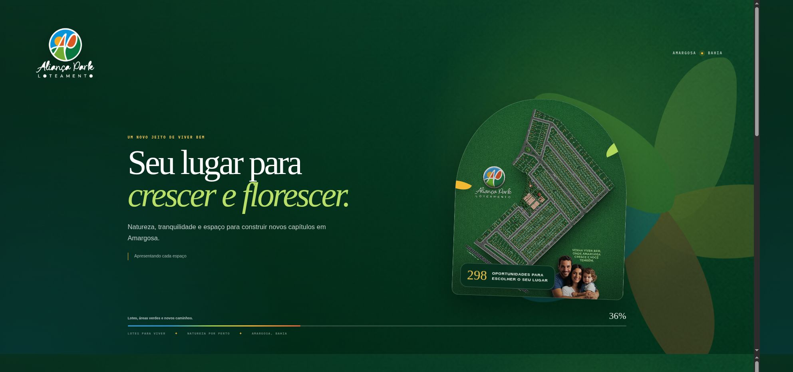
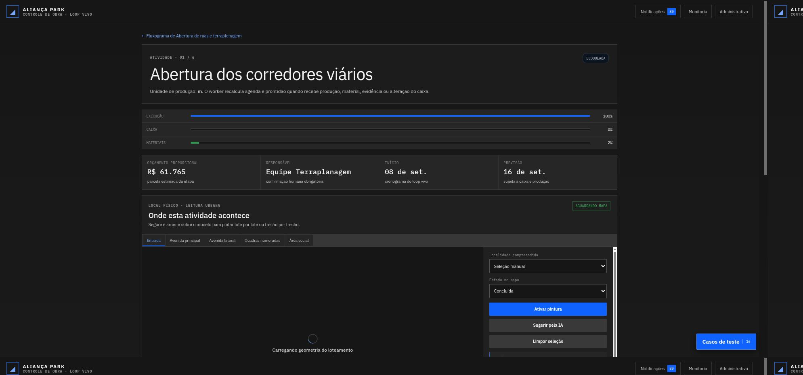
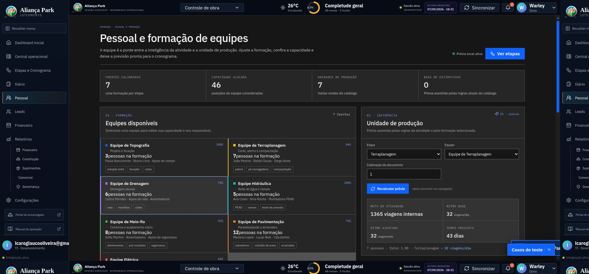
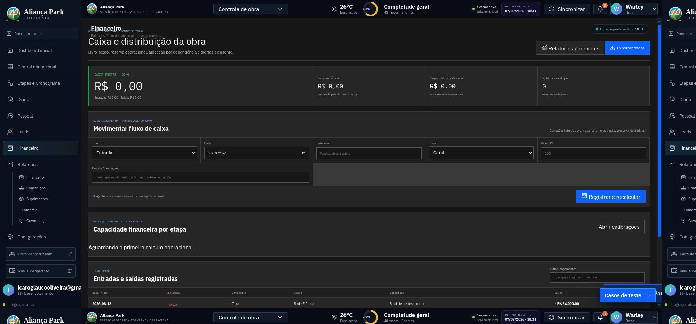
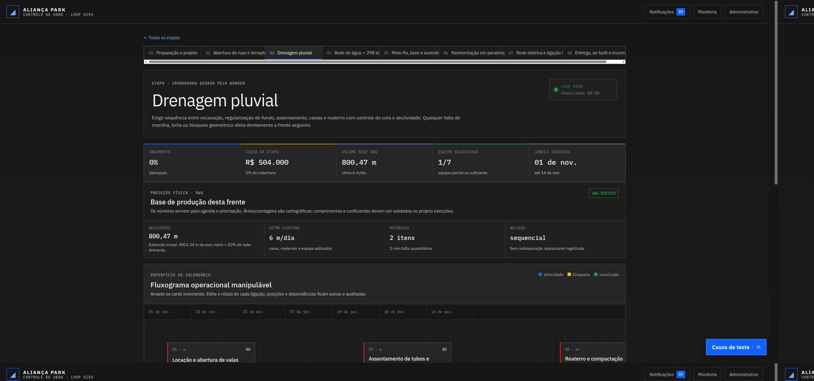

A obra não precisa ser uma caixa-preta.
Uma operação viva conecta venda, caixa e execução para o dono decidir com contexto e agir no momento certo.
Venda começa quando o cliente enxerga o lugar.

O caixa mestre transforma saldo em prioridade.
Uma visão única mostra o que está ativo, o que trava e qual frente pode avançar com os recursos disponíveis.

A IA observa. O worker organiza.
Entradas, edições, inferências e notificações ficam explicadas no próprio fluxo.

Contexto preservado
O agente reage à mudança sem apagar a trilha do que aconteceu.
24/7Humano no comando
Sugestões e alertas aguardam a confirmação responsável.
auditávelCada atividade tem lugar, ritmo e prova.
A equipe seleciona os polígonos no loteamento 3D e registra produção, materiais, pessoal, data e evidência.

Da compra ao pessoal, tudo conversa.
Registros financeiros, materiais, corretores e equipes vivem em superfícies próprias, mas obedecem ao mesmo contexto operacional.


Organizar é deixar cada decisão explicável.
O chat permanente acompanha a navegação, reage às mudanças e traduz a operação em próximos passos claros.

Acompanhe. Decida. Execute.
Aliança Park · uma plataforma para transformar informação de obra em ação coordenada.